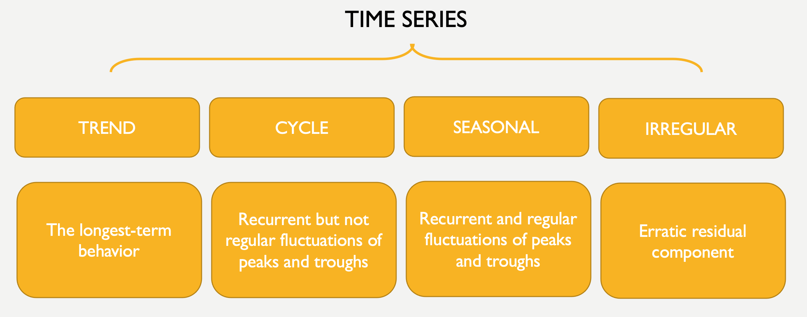

Chapter 7 Structural Decomposition
7.1 Component of a time series
A time series can be considered composed of 4 main parts: trend, cycle, seasonality, and the irregular or remainder/residual part.

7.1.1 Trend and Cycle
The Trend component is the longest-term behavior of a time series. The simplest model for a trend is a linear increase or decrease, but the trend has not to be linear. In the AirPassengers time series there is a clear upward, linear trend.
library(xts)
data("AirPassengers")
AirPassengers_xts <- as.xts(AirPassengers)
plot.xts(AirPassengers_xts)
7.1.1.1 Stochastic and Deterministic Trend
There is a distinction between deterministic and stochastic trends.
A deterministic trend is a fixed function of time. If a series has a deterministic trend, the increase (or decrease) in the value of the series is a function of time. For instance, it may appear to grow or decline steadily over time. A deterministic trend can be linear, as well as non linear. Deterministic trends have plausible explanations (for example, a deterministic increasing trend in the data may be related to an increasing population). A series with deterministic trend is also called trend-stationary.
A stochastic trend wanders up and down or shows change of direction at unpredictable times. Time series with a stochastic trend are also said to be difference stationary. An example of stochastic trend is provided by the so-called random walk process.
Random Walk is a particular time series process in which the current values are combinations of the previous ones (\(x_t = x_t-1 + w_t\), where \(x_t-1\) is the value immediately before x, and \(w_t\) is a random component). The resulting time series is characterized by a discernible pattern over time which is not exactly predictable (stochastic trend). Starting from the same initial point, the same process can generate very different time series. Below you can see two examples of random walk. They are generated through the same simulation but starting from different initial points. We’ll return to these topics in the next chapters.
set.seed(111)
Random_Walk <- arima.sim(n = 500, model = list(order = c(0,1,0)))
plot.ts(Random_Walk, ylab = expression(italic(x)[italic(t)]), main = "Random Walk")
set.seed(555)
Random_Walk <- arima.sim(n = 500, model = list(order = c(0,1,0)))
plot.ts(Random_Walk, ylab = expression(italic(x)[italic(t)]), main = "Random Walk")
A paper on The effectiveness of social distancing in containing Covid-19 shows an example of stochastic trend and complex, deterministic nonlinear trends represented by polynomials.
![Figure 5 shows the actual number of Covid-19 cases recorded in the UK up to 17 June 2020. The stochastic trend estimated earlier is superimposed on the actual observations and so are two deterministic nonlinear trends represented by polynomials of degrees 5 and 6. We can see that the stochastic trend captures the slow growth at the beginning of the sample period whereas the two deterministic trends do not. The stochastic trend is better also at capturing the sharp increase represented by observation number 72.. (original caption)](images/covid-trends.jpeg)
Figure 7.1: Figure 5 shows the actual number of Covid-19 cases recorded in the UK up to 17 June 2020. The stochastic trend estimated earlier is superimposed on the actual observations and so are two deterministic nonlinear trends represented by polynomials of degrees 5 and 6. We can see that the stochastic trend captures the slow growth at the beginning of the sample period whereas the two deterministic trends do not. The stochastic trend is better also at capturing the sharp increase represented by observation number 72.. (original caption)
The cyclical component is represented by fluctuations (rises and falls) not occurring at a fixed frequency (none of these is apparent in the airline bookings time series). The cycle component is therefore different from the seasonal variation (see below) in that it does not follow a fixed calendar frequency. The cyclic component of the series is often considered along with the trend (trend-cycle).
7.1.2 Seasonality
The Seasonal component is a repeated pattern occurring at a fixed time period such as the time of the year or the day of the week (the frequency of seasonality, which is always a fixed and known frequency). There is a clear seasonal variation in the AirPassenger time series: bookings were highest during the summer months of June, July, and August and lowest during the autumn/winter months.

It is possible to plot the distributions of data by months by using the function boxplot and cycle, to visualize the increasing number of passengers during the summer months. In this case, cycle is used to refer to the positions of each observation in the (yearly, in this case) cycle of observations (every year is considered to be a cycle of 12 observations).

The library forecast, an R package that provides methods and tools for displaying and analysing time series forecasts, includes a function to create a “polar” seasonal plot.
 An example of weekly seasonality can be found in the COVID-19 statistics.
An example of weekly seasonality can be found in the COVID-19 statistics.

Figure 7.2: Covid statistics (Google)
Cyclic and seasonal variations can look similar. Both cyclic and seasonal variations have ‘peak-and-trough’ patterns. The main difference is that in seasonal patterns the period between successive peaks (or troughs) is constant, while in cyclical patterns the distance between successive peaks is irregular.
7.1.3 Residuals
The irregular or remainder/residual component is the random-like part of the series.
In general, when we fit mathematical models to time series data, the residual error series represents the discrepancies between the fitted values, calculated from the model, and the data. A good model encapsulates most of the deterministic features of the time series, and the residual error series should therefore appear to be a realization of independent random variables from some probability distribution.
The analysis of residuals is thus important to judge the fit of a model. In this case, its residual error series appears to be a realization of independent random variables. Often the random variable is conceived as a Gaussian random variable.
par(mfrow = c(2,1))
plot(AirPassengers_Random, xlab="", ylab="")
hist(na.omit(AirPassengers_Random), main = "", xlab="", ylab="")
7.1.3.1 White Noise
The standard model of independent random variation in time series analysis is known as white noise (a term coined in an article published in Nature in 1922, where it was used to refer to series that contained all frequencies in equal proportions, analogous to white light). The charts below show how a white noise process looks like. We’ll return to these topics in the next chapters.


7.2 Structural decomposition
Along with the analysis of the peaks (see previous chapter), analyzing a time series based on these structural parts can be an important exploratory step. It helps understanding the likely causes of the series features and formulate an appropriate time series model. For instance, in the case of the AirPassengers series, we could hypothesize that the increasing trend is due to the rising prosperity in the aftermath of the Second World War, greater availability of aircraft, cheaper flights due to competition between airlines, and an increasing population. The seasonal variation, instead, seems to coincide with vacation periods.
Decomposition methods try to identify and separate the above mentioned parts of a time series. Usually they consider together the trend and cycle (trend-cycle) - the longer-term changes in the series - and the seasonal factors - periodic fluctuations of constant length happening at a specific calendar frequency).
There are two main ways through which these elements can be combined together: in the additive and the multiplicative form:
- The additive model (\(x_{t} = m_{t} + s_{t} + z_{t}\), where \(x_{t}\) is the observed time series, \(m_{t}\) is the trend-cycle component, \(s_{t}\) is the seasonal component and \(z_{t}\) is the residual) is useful when the seasonal variation is relatively constant over time
- The multiplicative model (\(x_{t} = m_{t} * s_{t} * z_{t}\)) is useful when the the seasonal effects tends to increase as the trend increases.
There are different methods to decompose a time series. Here we consider the function decompose. This function is defined as Classical Seasonal Decomposition by Moving Averages. The function decompose uses a moving average (MA) approach to filter the data. Moving average is a classical approach to extract the trend from a time series by averaging out the seasonal effects.
7.2.1 Moving Average
Moving average is a process that replaces each value \(x_{t}\) with an average of its current value \(x_{t}\) and its immediate neighbors in the past and future. For instance, it is possible to calculate a simple moving average by using the closest neighbors of a point, as follows: \(x_{t} = \frac{1}{3} (x_{t-1} + x_{t} + x_{t+1})\). This is called Centered Moving Average.
The number of neighbors in the past and future is determined by the analyst and is also called width of the window. The time window for the moving average is chosen by considering the frequency of the data and their seasonal effects. For instance, monthly data, which are supposed to show monthly seasonality (for instance, in the AirPassengers data there are more passengers during the summer months), can be averaged by using a period of 12 months (six months before and after each point. Since we have an even number of months, some other calculation are necessary. For instance, the moving average value for July, is calculated by averaging the average of January up to December, and the average of February up to January. R functions do this for you).
The centered moving average is an example of a smoothing procedure that is applied retrospectively to a time series with the objective of identifying an underlying signal or trend. Smoothing procedures usually use points before and after the time at which the smoothed estimate is to be calculated. A consequence is that the smoothed series will have some points missing at the beginning and the end unless the smoothing algorithm is adapted for the end points. In the case of monthly data, for instance, the moving average filter determines the lost of the first and last six months of data.
Smoothing procedures like moving average, allows the main underlying trend to emerge by filtering out seasonality and noise, so they are used to get an idea of the long-term underlying process of a time series.
elections_news <- read_csv("data/elections-stories-over-time-20210111144254.csv",
col_types = cols(date = col_date(format = "%Y-%m-%d")))
en <- as.xts(x = elections_news$ratio, order.by = elections_news$date)
en2 <- rollmean(en, k = 2)
en4 <- rollmean(en, k = 4)
en8 <- rollmean(en, k = 8)
en16 <- rollmean(en, k = 16)
en32 <- rollmean(en, k = 32)
enALL <- merge.xts(en, en2, en4, en8, en16, en32)
# notice the NA elements increasing as the width of the moving average increase
head(enALL, 10) ## en en2 en4 en8 en16 en32
## 2015-01-01 0.01456405 0.01334178 NA NA NA NA
## 2015-01-02 0.01211950 0.01192277 0.01275765 NA NA NA
## 2015-01-03 0.01172604 0.01217353 0.01266199 NA NA NA
## 2015-01-04 0.01262102 0.01340120 0.01332611 0.01285129 NA NA
## 2015-01-05 0.01418138 0.01447869 0.01320110 0.01253790 NA NA
## 2015-01-06 0.01477600 0.01300100 0.01294493 0.01250958 NA NA
## 2015-01-07 0.01122600 0.01141117 0.01241382 0.01267144 NA NA
## 2015-01-08 0.01159633 0.01182664 0.01169304 0.01285992 0.01257820 NA
## 2015-01-09 0.01205695 0.01197492 0.01214178 0.01262867 0.01239793 NA
## 2015-01-10 0.01189290 0.01245691 0.01277492 0.01226887 0.01234396 NA
7.2.2 Decompose
To apply the function decompose, we need a ts object.
Considering the AirPassengers time series, since the seasonal effect tends to increase as the trend increases, we can use a multiplicative model.

As an example of additive model we can use data from the “Seatbels” data set.


The residual part of the model should be (approximately) random, which indicates that the model explained (most of) the significant patterns in the data (the “signal”), leaving out the “noise”.
par(mfrow = c(1,2))
plot.ts(Seatbelts_dec$random, main="Residuals", ylab="")
hist(Seatbelts_dec$random, breaks = 25, freq = F, main = "Histogram")
lines(density(Seatbelts_dec$random, na.rm = T), col="red")
We can re-create the original time series starting from its elements (we don’t actually need to do that, it is just for illustrative purposes).
par(mfrow=c(2,1))
plot(AirPassengers_dec$trend * AirPassengers_dec$seasonal * AirPassengers_dec$random,
xlim=c(1950, 1960), ylim=c(0,600), main = "'Re-composed' series", ylab="")
plot(AirPassengers, xlim=c(1950, 1960),ylim=c(0,600), main = "Original series", ylab="")
7.3 Exercises
Carry out the following exploratory time series analysis:
- Produce a time plot of the data. Plot the aggregated annual series and a boxplot that summarizes the observed values for each season, and comment on the plots.
- Decompose the series into the components trend, seasonal effect, and residuals, and plot the decomposed series. Produce a plot of the trend with a superimposed seasonal effect.